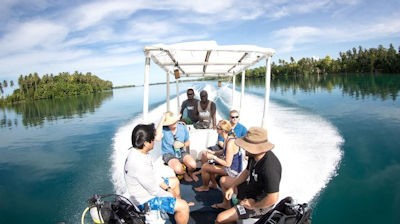
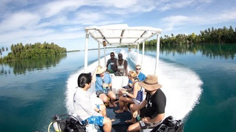

Solomon Islands
The Solomon Islands, a nation of hundreds of islands in the South Pacific, has many WWII-era sites. Guadalcanal, a province and one of the archipelago’s largest islands, honors fallen Allied soldiers at its U.S. War Memorial. Guadalcanal is also home to the nation’s capital, Honiara, whose bustling Central Market showcases the islands’ produce and traditional handicrafts.
 
